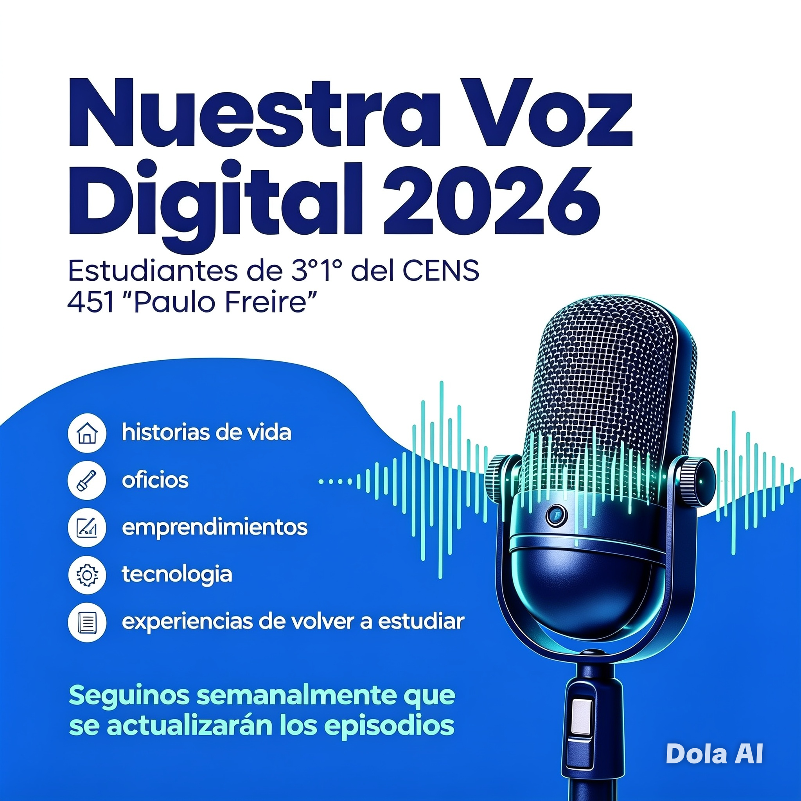

Bienvenidos a nuestro espacio de comunicación digital. En este podcast compartimos historias, opiniones, investigaciones y experiencias sobre temas que impactan en nuestra comunidad.
Reflexionamos sobre las ventajas y desafíos de la inteligencia artificial en la educación y en la vida cotidiana.
Entrevistas y experiencias de emprendedores locales.
Experiencias y testimonios de nuestros estudiantes.